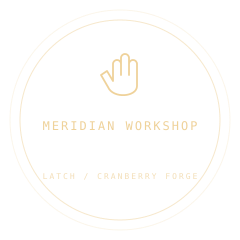

INDEPENDENT TOOLContextual interactions
Latch
Make the world answer.
Pick something up. Wind something forward. Give every little action a place in your world.
MIT LICENSEv0.1.0MODULAR BY DESIGN

INTERACTION STUDY / 001
The Meridian
Observatory
A keeper, a dormant machine,
and the last light before dawn.
ACTOR REACH · 3.1 M
Take the aether fuse
Press E or tap the key to collect.
POINTER · AIM / E · INTERACT / WASD ·
WALK / DRAG · ORBIT
Opening the observatory
aether fuseFOCUSED ROOT
—ACTOR DISTANCE
pressINPUT MODE
0.1.0INDEPENDENT PACKAGE
SMALL TOOL. TANGIBLE WORLDS.
From a raycast
to a reason to stay.
Latch adds actor reach, clear blocked reasons, and deliberate press or hold actions to native Three.js objects. Your game owns input, inventory, and consequences. Latch returns the events.
@cranberry-forge/latchTHREE.JS · MIT
const latch = new Latch({ reach: 3.1 });
latch.register({
id: 'crank', root: crank,
mode: 'hold', holdDuration: 1.8,
condition: () => hasFuse || 'Find the fuse',
});
const { focus, progress, events } = latch.update({
dt, aimRay, actorPosition, pressed,
});
// Apply game changes after update returns.FROM SHOWCASE TO YOUR PROJECT
Take the good parts with you.
Explore reach, aim, and hold actions. Let Latch report intent while your game owns the consequences.
Download the archive, then install locally.
npm install ./cranberry-forge-latch-0.1.0.tgz three@0.180.0